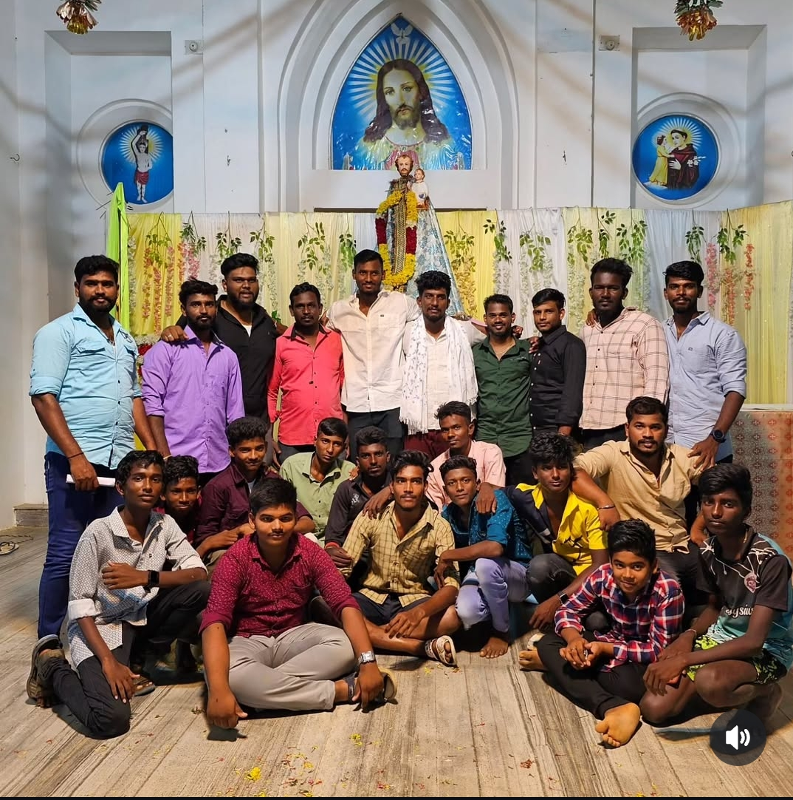

Cultural Heritage


A story of faith, unity and progress
Vandalampadu is a small hamlet located in the Radhapuram Block of Tirunelveli District, Tamil Nadu, India, and comes under the administration of T. Kallikulam Panchayath. The village lies about 45 km south of Tirunelveli district headquarters, 16 km from Radhapuram, and nearly 693 km from the state capital, Chennai. Vandalampadu’s PIN code is 627117, with Vallioor serving as the postal head office. Nearby villages include Achampadu, Kumbikulam, Kannanallur, Kovankulam, and Dhalapathisamudram. The village is bordered by Radhapuram Block to the east, Valliyoor Block to the south, Kalakadu Block to the north, and Thovala Block to the west. Vadakkuvalliyur, Panagudi, Nagercoil, and Tirunelveli are the nearest cities. Due to its proximity to the Bay of Bengal, Vandalampadu experiences a generally humid climate with warm weather throughout most of the year.
Many centuries ago, people lived in unity in a small village called Palaya Oor (Pallayur). Over time, diseases, lack of clean drinking water, and natural hardships made life increasingly difficult. To protect their lives and future, the villagers peacefully left their homeland. Some families settled in Valan Nagar, which later became today’s Vandalampadu, while others moved to nearby villages such as Kallikulam and Mullaikadu. Though time has passed, the memories of Palaya Oor continue to live on through stories and old belongings preserved by a few families.
St. Joseph’s Church has always been the backbone of Vandalampadu village. In the early days, before a formal church was built, villagers gathered in homes to pray and worship together. These prayer meetings strengthened unity, trust, and spiritual discipline among the people. The people of Vandalampadu firmly believe that St. Joseph has always been their protector and guide. The annual church festival is celebrated with great devotion from August 26 to September 4.
Today, Vandalampadu stands as a well-settled and peaceful village where families live with stability, dignity, and mutual respect. A majority of the working population is employed in various professional and industrial fields, both within India and abroad. Education, discipline, and mutual support continue to guide Vandalampadu toward sustainable growth, while faith and cultural values remain firmly preserved across generations.

Vandalampadu (வண்டலாம்படு)
Radhapuram Block,
Tirunelveli District,
Tamil Nadu – 627117
This website is created to share the history, culture, and community life of Vandalampadu village. For local information, community updates, or general enquiries, please connect with village members directly.
Thank you for taking the time to learn about our village.
You are always welcome as part of our community.
Send Enquiry via WhatsApp